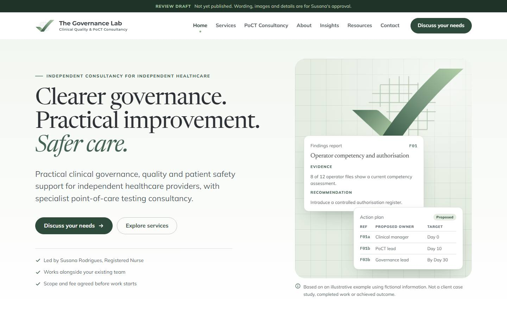
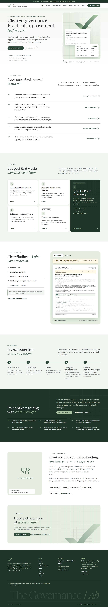
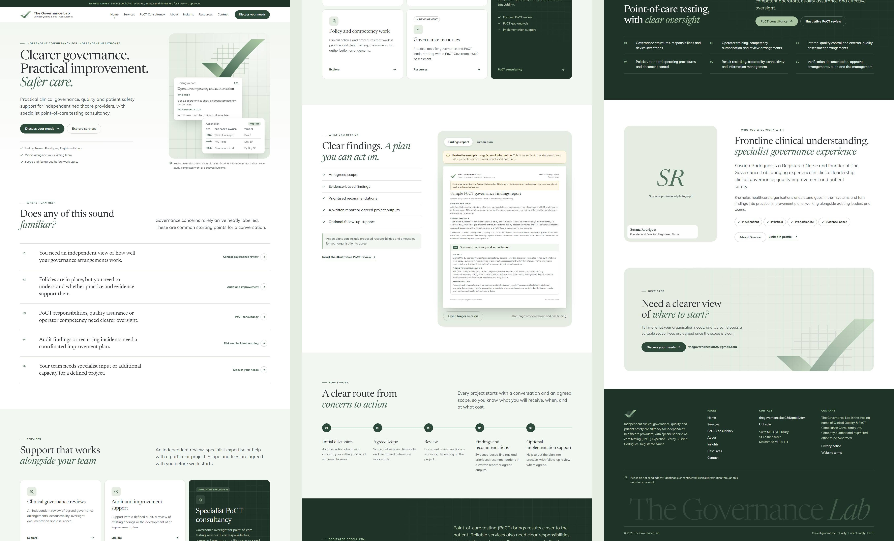
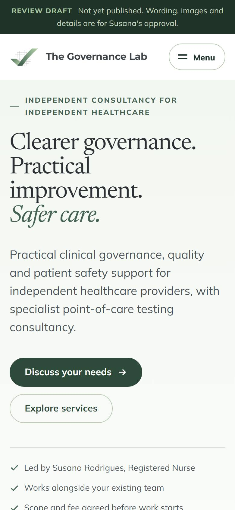
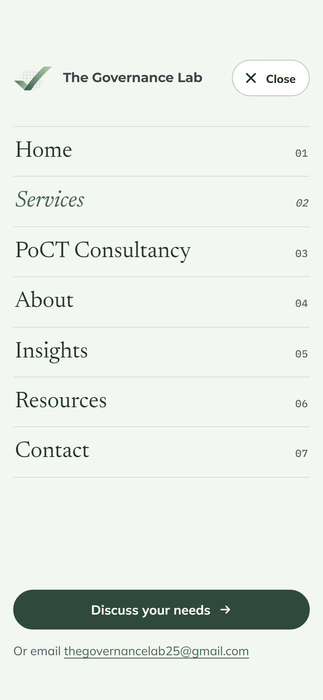
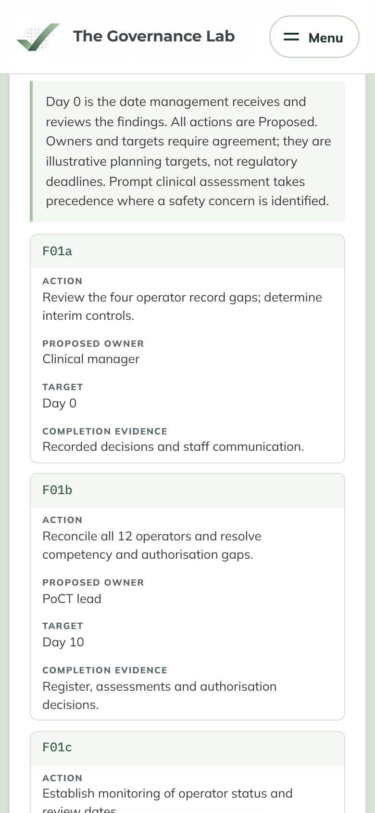
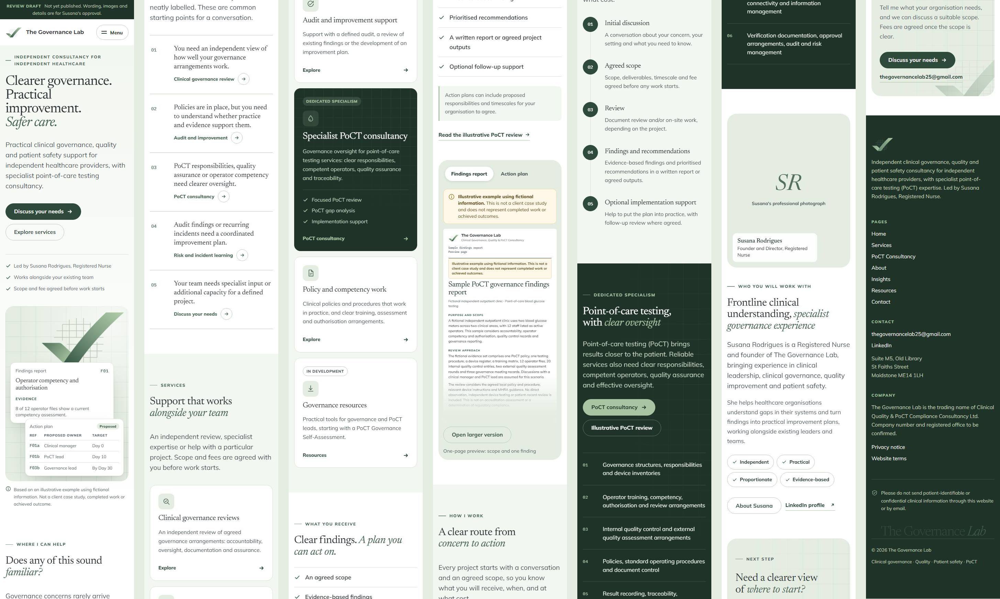
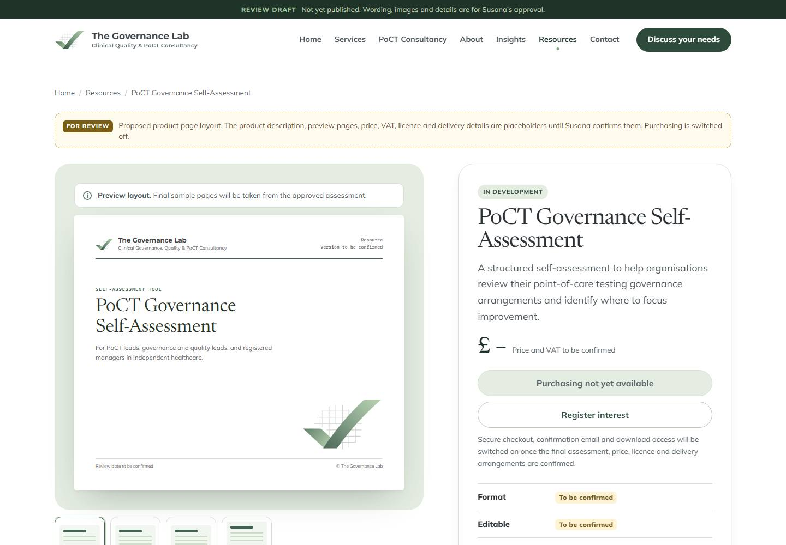

Website review
Page structure and homepage, for your approval
As requested, this pack shows the proposed page structure and the homepage design on desktop and mobile, plus a proposed layout for the PoCT Governance Self-Assessment product page. Everything here is a draft: wording, images and details all wait for your approval.
What we would like you to review
The easiest way to reply is by email, quoting the section numbers in this pack (for example "Home 4: change ...").
Page structure
The seven pages in the main navigation and what sits on each one (section 02).
Homepage design
Desktop and mobile layouts, section by section, with the proposed wording (sections 03 and 04).
Product page layout
A proposed layout for the PoCT Governance Self-Assessment, with purchasing switched off (section 06).
Proposed page structure
Seven pages in the main navigation, as in your brief. Clinical governance, quality and patient safety lead; PoCT has its own page as a dedicated specialism. A "Discuss your needs" button is visible on every page.
Home
- Opening: headline, introduction and two buttons
- Problems clients recognise
- Services (five cards)
- What you receive, with document previews
- How I work (five steps)
- PoCT specialism
- Meet Susana
- Next step: discuss your needs
Services
- Clinical governance review
- Clinical audit and improvement support
- Policy and procedure development
- Training and competency frameworks
- Risk and incident learning support
- Ways to start
- Each service: who it is for, the problem, possible scope, outputs, how to enquire
PoCT Consultancy
- What I can review and support (six areas)
- Ways to engage (three)
- Illustrative PoCT review (your narrative)
- Sample documents
- Sample findings report preview
- Sample action plan preview
About
- Photograph and your biography (word for word)
- Approach: independent, practical, proportionate, evidence-based
- Support alongside your team
- Experience
- Qualifications and training
Insights
- Topic filters
- Article cards
- Article page: author, date, sources, related services
Resources
- Resource cards
- PoCT Governance Self-Assessment product page
- Sample documents (free to view)
- Tailored support
Contact
- Enquiry form (name, organisation, email, optional telephone, area of interest, message)
- Note: no patient-identifiable information
- Email, LinkedIn and address
- What happens next
Footer, every page
- Company details (to be confirmed)
- Privacy notice
- Website terms
- Patient information reminder
Homepage on desktop
The opening uses your headline and supporting text, with a branded visual built from your tick-and-grid logo and short extracts from the fictional PoCT example, so visitors see the kind of work they would receive straight away.

- Home 1
Opening
"Clearer governance. Practical improvement. Safer care." with your supporting text, Discuss your needs and Explore services buttons, and three short trust points. Your photograph could replace the visual on the right if you prefer.
- Home 2
Problems clients recognise
Your five statements as a numbered list. Each one links to the matching service, so visitors who recognise a problem can go straight to the help.
- Home 3
Services
Five cards: clinical governance reviews, audit and improvement support, policy and competency work, governance resources (marked in development) and a highlighted card for specialist PoCT consultancy.
- Home 4
What you receive
The five deliverables from your brief beside readable previews of the sample findings report and action plan, each labelled as fictional, with "Open larger version".
- Home 5
How I work
Your five steps: initial discussion, agreed scope and fee, review, findings and recommendations, optional implementation support.
- Home 6
PoCT specialism
Your PoCT introduction and the six areas you listed, in the deep green brand colour, linking to the PoCT page and the illustrative review.
- Home 7
Meet Susana
Your photograph, the opening of your biography, the four principles of your approach and links to About and LinkedIn.
- Home 8
Next step
"Need a clearer view of where to start? Discuss your needs." with your email as an alternative.


Homepage on mobile
The same content in one column, with large text and buttons sized for thumbs. The menu opens full screen, the "Discuss your needs" button follows the reader down the page, and tables in the sample documents become easy-to-read cards.




Design direction
Your sage and deep green, with white and charcoal, sampled directly from your tick logo. The grid and tick in the logo became the site's visual theme: the grid for evidence and method, the tick for assurance. No stock photographs are used yet; the document previews do that work.
Deep green#446251, from your logo
Sage#a8c4a2, from your logo
Forest#1f3329, dark sections
Sage tint#f3f7f1, light sections
White#ffffff
Charcoal#2b3135, text
Clearer governance. Safer care.
Close to the lettering in your logo and very readable on small screens.
F01 · Day 0 · Day 30
Inspiration from Awwwards
Function Health
Honourable MentionSerif headings with an italic accent phrase, and a membership card with a ticked list of what is included. Used for your headline style and the product page purchase card.
Oregon Health Leadership Council
NomineeA healthcare leadership organisation in deep teal and sage, with ruled lists and labelled article cards. Used for the problem list and Insights cards.
Outsource Consultants Inc.
Site of the DayA consultancy site with visible grid lines, numbered sections and an expanding services list. Used for the numbered steps and the grid theme, which also echoes your logo.
Heva Health
Site of the DayA calm sage and olive palette with rounded buttons. Used for the button style and overall tone.
Institute of Health
Honourable MentionA large wordmark across the footer. Used for "The Governance Lab" at the foot of every page.
You mentioned sending two or three websites you like; if you do, we will adjust the direction to match.
Resources: proposed product page
A layout for the PoCT Governance Self-Assessment, covering everything your brief lists for a product page. Purchasing is switched off and every detail you have not confirmed is marked "to be confirmed". The wording is a placeholder for your approval.

| Your brief asks for | On the proposed page | Status |
|---|---|---|
| Name, purpose and audience | Title, short description, "Who it is for" | Wording to approve |
| What is included, with sample pages | Four preview pages (cover, contents, section page, action summary) and a contents list | Needs the final assessment |
| Format, editability, software, version or review date | Details list in the purchase card | To be confirmed |
| Price and tax information | Price block | To be confirmed |
| Licence scope and organisational limits | "Before you buy" section | To be confirmed |
| Delivery, support and limitations | "How it works" steps, help email, limitations | Drafted |
| Purchase button and enquiry option | Purchase button (switched off), Register interest, tailored support link | In place, purchasing off |
The self-assessment overview you mentioned was not attached to your email, so the previews use your six PoCT areas as a proposed structure. Once we have it, the previews and contents will match the real assessment.
How the fictional examples are used
Following your instructions in the examples document:
- Your full label, "Illustrative example using fictional information. This is not a client case study and does not represent completed work or achieved outcomes.", is on every preview and every page that shows them.
- Findings report preview: the review scope and one complete finding (F01) on one readable page, with "Open larger version".
- Action plan preview: the matching plan showing actions, proposed owners, targets and completion evidence, readable on a phone.
- Your project narrative is used word for word on the PoCT page under "Illustrative PoCT review".
- The full four-page sample is laid out ready to become a download, but is not linked from the site until you approve it.
What we need from you
Grouped the same way as your content checklist. Anything not yet confirmed stays a placeholder in the draft.
To finish the design
- Your logo as SVG and a high-resolution transparent PNG (the draft uses a redrawn copy of your tick logo)
- The original, high-resolution professional photograph
- The PoCT Governance Self-Assessment overview (it was not attached)
- Two or three websites you like, if you would like to share them
Before the site goes live
- Confirm the experience and qualifications taken from LinkedIn, and whether to name past employers
- Whether to add your NMC registration
- Geographical coverage, and remote or on-site availability
- Whether to publish a telephone number
- Registered company name, number, registered office and any VAT details
- Privacy notice and website terms wording
- Your first Insights articles
- Analytics: none, or a privacy-friendly option
A few choices
- Show the Resources page at launch, or hide it until the self-assessment is ready
- Keep the branded visual in the homepage opening, or use your photograph there
- A medication safety topic for Insights
- Any changes to the draft wording on the Services, PoCT and About pages